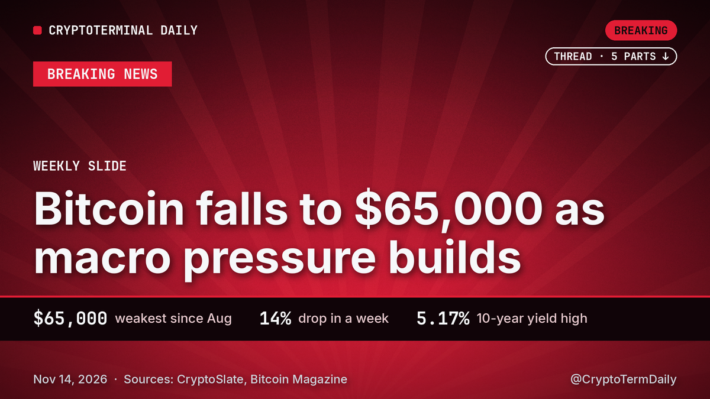

Why bitcoin slid to $65,000, and why the cause sits outside crypto

Bitcoin spent the week giving back ground it had held since late summer. On Nov. 7 it traded near $75,750. By Saturday morning it had dropped to about $65,000, a fall of roughly 14% and the weakest print since mid-August, according to Bitcoin Magazine. The weekend leg broke below Friday's low of about $67,555, so the market now has no recent floor to point to.
Most of the pressure came from places that have little to do with crypto itself.
The macro squeeze
Start with rates. Fed officials spoke bluntly on Friday. Boston's Susan Collins sees room for additional tightening soon, and San Francisco's Mary Daly expects rate increases to follow. Traders have taken the hint. CME FedWatch data show a quarter-point increase at the Dec. 8-9 meeting as fully priced.
The bond market backed that view. Friday saw the 10-year Treasury yield peak at 5.17%, its highest in four weeks, before it settled at 5.15%. The dollar index held at a 19-month high. For an asset that pays no interest, a higher yield and a stronger dollar both raise the opportunity cost of holding it, and bitcoin has felt that for most of November.
Friday's producer-price report gave only a brief lift. Prices rose 0.3% in October, a touch under the 0.4% economists expected, and bitcoin popped above $70,000 for minutes before sellers returned. On a yearly basis the index was up 6.5%, the largest 12-month rise since November 2022, which is a poor backdrop for anyone hoping the Fed will ease off.
The AI shock
The second leg was equities. Nvidia chief executive Jensen Huang resigned on Thursday, and AI stocks sold off hard. Bitcoin followed, sliding under $72,000 and then toward $71,000 by the evening. On Friday the semiconductor ETF from iShares lost more than 3%, AMD fell more than 8% and the Nasdaq 100 closed down 1.22%.
That matters because bitcoin has been trading more like a risk asset than a hedge. When chip stocks stumble, crypto has offered no cushion. Nvidia publishes its third-quarter earnings on Tuesday, the first since Huang left, with Colette Kress leading as interim CEO. Whatever the numbers say, the tone of that call will probably move tech and, with it, bitcoin.
Where the support is, and where it is not
Coinbase Institutional tried to put a map on the drop. In commentary published on Nov. 13, it estimated that roughly 855,000 BTC last moved at prices between $65,000 and $68,000. Last-move prices are a rough proxy for what holders paid, so that band is a zone where many coins are near break-even. Coinbase pointed to $66,000 to $68,000 as potential support, noting that the cost-basis cluster overlaps with historical pivot levels and the 200-week moving average, as CryptoSlate reported.
The catch is that a cluster of coins is not the same as a cluster of buyers. CryptoSlate stressed that this is a positioning measure, not proof of new buy orders. Holders in that band could defend their entry price, or they could use any bounce to sell and get their money back. The support case strengthens only if price holds in or above the range and spot purchases keep coming. It weakens if price stays below the range while selling resumes.
Bitcoin now trades at about $65,500 on CoinGecko, so it is testing the lower edge of that zone rather than standing comfortably inside it.
Miners catch a break
One piece of good news arrived overnight. Bitcoin's mining difficulty dropped 9.13% at block 975,744, going from about 148.36 trillion to 134.82 trillion. No cut has been bigger since June. Difficulty resets every 2,016 blocks to keep block times near 10 minutes. A lower setting means each machine earns a larger share of rewards, which eases the squeeze on miners after a week of falling prices. It does not change the direction of the market, but it removes one source of forced selling.
What to watch
Weekend trading is thin, and Bitcoin Magazine noted that this leaves price more exposed to sharp moves in either direction. US stock and bond markets are closed on Saturday, so the next real test comes when they reopen. If yields jump again, the pressure could continue. If they ease, bitcoin gets room to stabilize.
Three things decide the next few days. First, whether the market holds the $65,000 area or closes below Coinbase's zone. Second, Nvidia's report on Tuesday and what it does to chip stocks. Third, the Fed path into December, where a hike is already assumed, so only a surprise in either direction will shift pricing.
Our take: this selloff is a macro story first and a crypto story second. Until yields, the dollar and the AI trade stop pushing the same way, the burden of proof sits with the buyers.